Sprint2
Gparted:
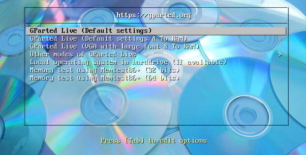
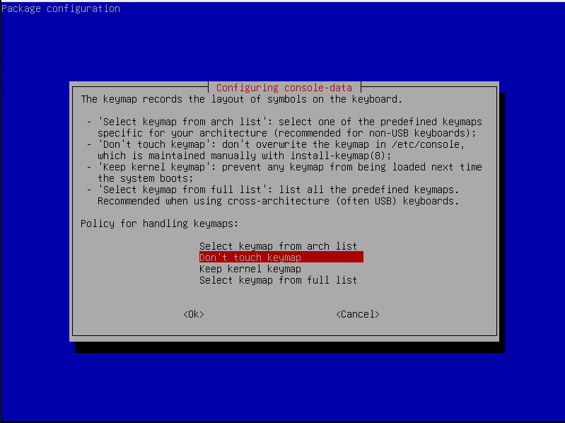
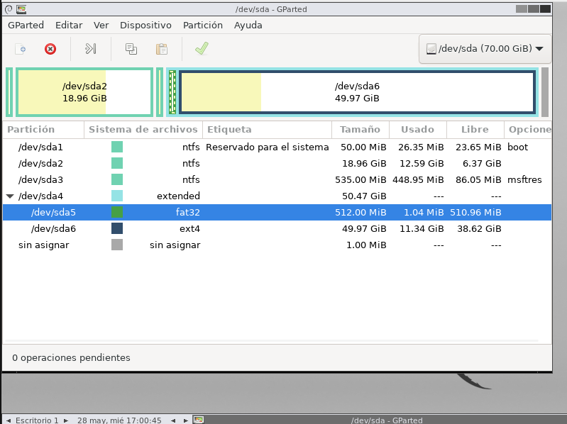
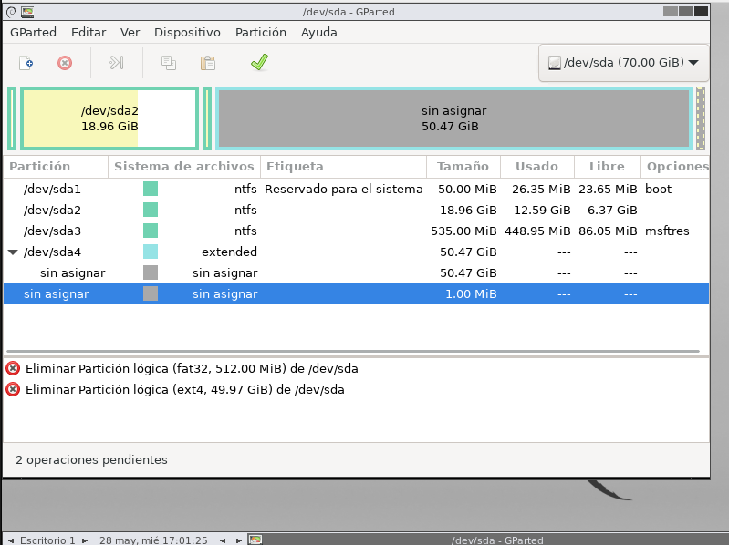
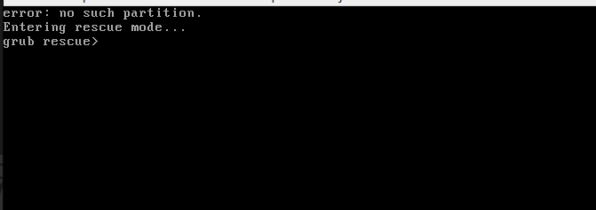
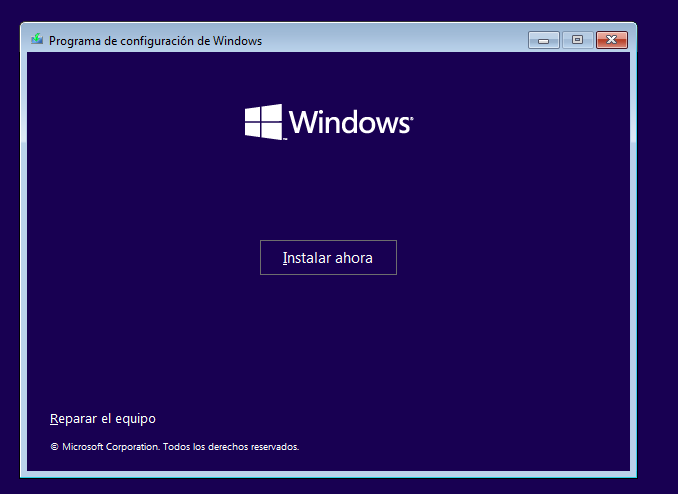
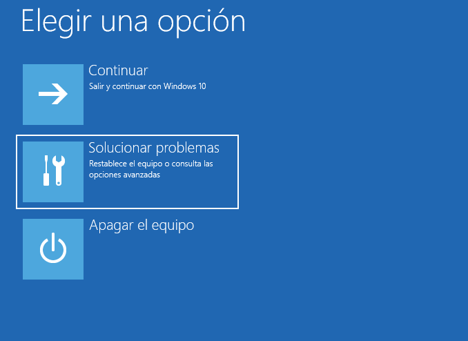
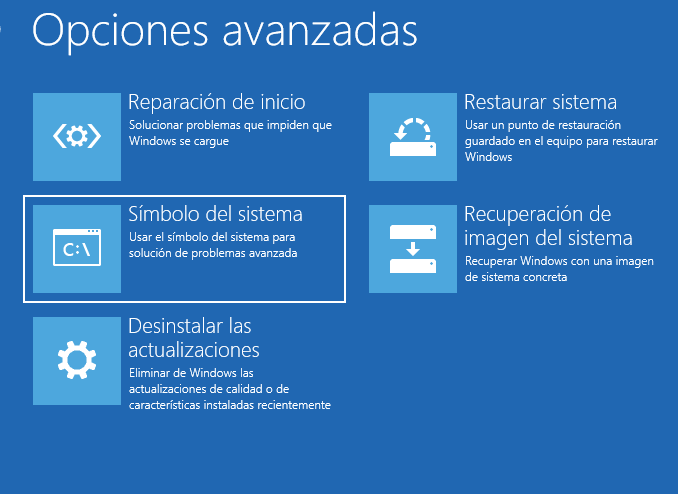
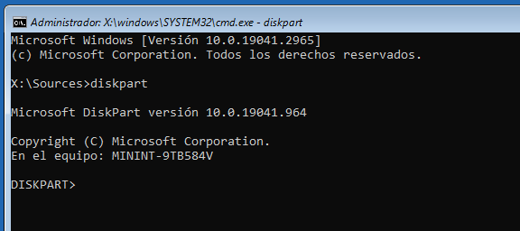
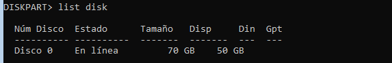
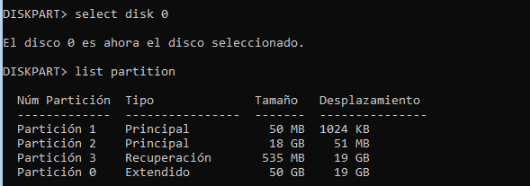
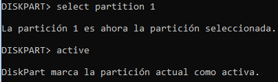
Llicencies de windius:
1. OEM (Original Equipment Manufacturer)
- Associada al maquinari.
- No es pot transferir a un altre ordinador.
- Més barata que altres opcions.
2. Retail (al detall)
- Comprada en botigues físiques o digitals .
- Es pot transferir a un altre ordinador .
- Té suport directe de Microsoft.
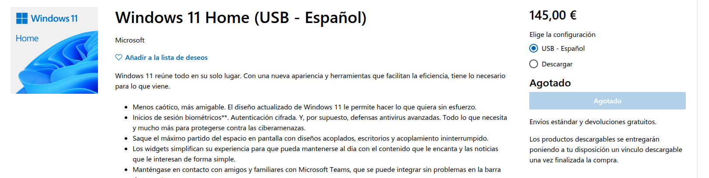
3. Volume Licensing
- Per empreses, escoles, institucions.
- Permet instal·lar Windows en múltiples dispositius amb una sola clau.
4. Llicència digital
- Associada al compte Microsoft.
- Es reactiva automàticament si tornes a instal·lar Windows al mateix dispositiu.
Comparació de llicències de Windows
| Característica | OEM | Retail | Volume Licensing | Llicència Digital |
|---|---|---|---|---|
| Origen | Preinstal·lada | Botiga o online | Per a organitzacions | Vinculada al compte |
| Transferible a altre PC | No | Sí | Sí (segons condicions) | No |
| Preu | Més econòmica | Més cara | Variable | Inclosa amb el compte |
| Suport | Fabricant del dispositiu | Microsoft | Responsable IT | Microsoft |
| Activació | Clau fixa per dispositiu | Clau de producte | MAK o KMS | Automàtica amb el compte |
| Públic destinatari | Particulars | Usuaris generals | Empreses i institucions | Qualsevol usuari |